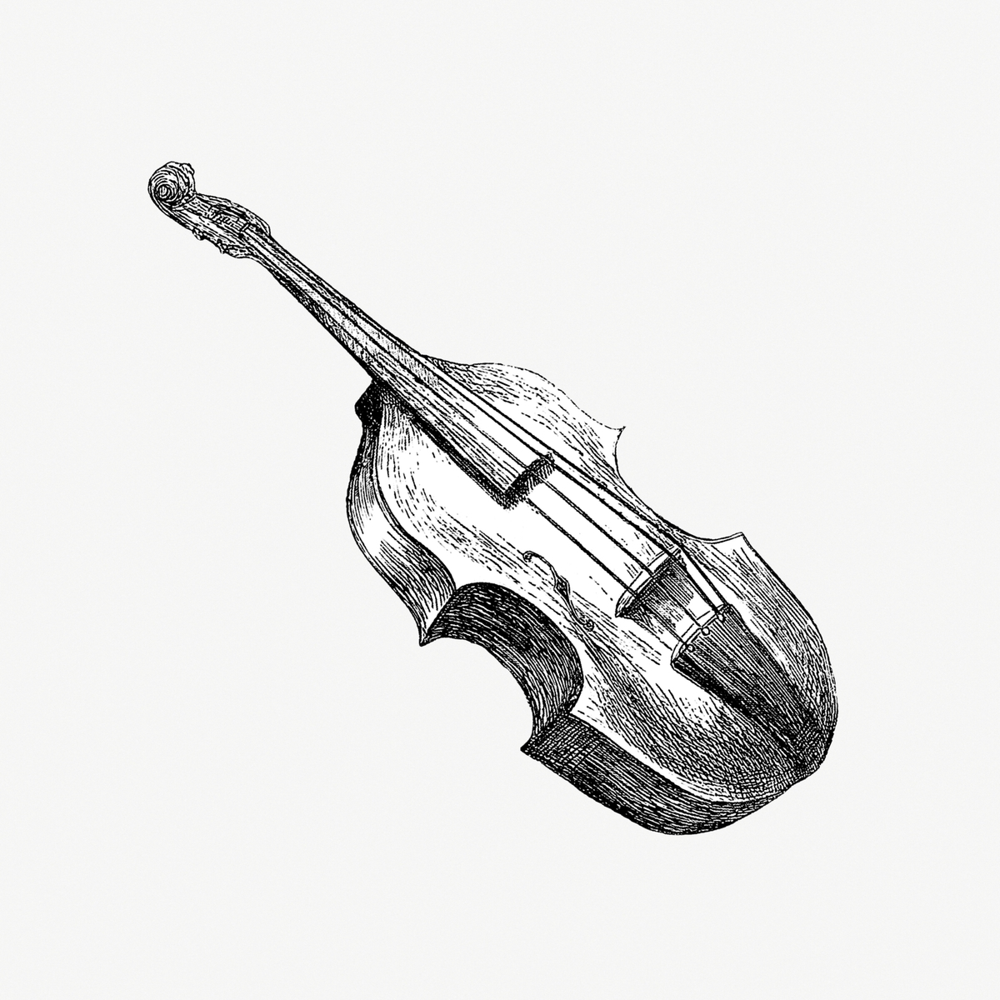

After he had travelled a little way, he spied a dog lying by the roadside and panting as if he were tired. 'What makes you pant so, my friend?' said the ass. 'Alas!' said the dog, 'my master was going to knock me on the head, because I am old and weak, and can no longer make myself useful to him in hunting; so I ran away; but what can I do to earn my livelihood?'

'Hark ye!' said the ass, 'I am going to the great city to turn musician: suppose you go with me, and try what you can do in the same way?' The dog said he was willing, and they jogged on together.
They had not gone far before they saw a cat sitting in the middle of the road and making a most rueful face. 'Pray, my good lady,' said the ass, 'what's the matter with you? You look quite out of spirits!'
'Ah, me!' said the cat, 'how can one be in good spirits when one's life is in danger? Because I am beginning to grow old, and had rather lie at my ease by the fire than run about the house after the mice, my mistress laid hold of me, and was going to drown me.'
'Oh,' said the ass, 'by all means go with us to the great city; you are a good night singer, and may make your fortune as a musician.' The cat was pleased with the thought, and joined the party.
Soon afterwards, as they were passing by a farmyard, they saw a cock perched upon a gate, and screaming out with all his might and main. 'Bravo!' said the ass; 'upon my word, you make a famous noise; pray what is all this about?'
'Why,' said the cock, 'I was just now saying that we should have fine weather for our washing-day, and yet my mistress and the cook don't thank me for my pains, but threaten to cut off my head tomorrow, and make broth of me for the guests that are coming on Sunday!'
'Heaven forbid!' said the ass, 'come with us Master Chanticleer; it will be better, at any rate, than staying here to have your head cut off!'
They could not, however, reach the great city the first day; so when night came on, they went into a wood to sleep. The cock, thinking that the higher he sat the safer he should be, flew up to the very top of the tree, and then looked out on all sides of him to see that everything was well. In doing this, he saw afar off something bright and shining.
'There must be a house no great way off, for I see a light,' he called to his companions.
The ass, being the tallest of the company, marched up to the window and peeped in. 'What do I see?' replied the ass. 'Why, I see a table spread with all kinds of good things, and robbers sitting round it making merry.'
They consulted together how they should contrive to get the robbers out; and at last they hit upon a plan:
- The ass placed himself upright on his hind legs, with his forefeet resting against the window
- The dog got upon his back
- The cat scrambled up to the dog's shoulders
- The cock flew up and sat upon the cat's head
When all was ready a signal was given, and they began their music. The ass brayed, the dog barked, the cat mewed, and the cock screamed!
Then they all broke through the window at once, and came tumbling into the room, amongst the broken glass, with a most hideous clatter! The robbers, who had been not a little frightened by the opening concert, had now no doubt that some frightful hobgoblin had broken in upon them, and scampered away as fast as they could.
But about midnight, when the robbers saw from afar that the lights were out and that all seemed quiet, one of them, who was bolder than the rest, went to see what was going on.
Finding everything still, he marched into the kitchen, and groped about till he found a match. Then, espying the glittering fiery eyes of the cat, he mistook them for live coals, and held the match to them to light it.
But the cat, not understanding this joke, sprang at his face, and spat, and scratched at him. The dog jumped up and bit him in the leg; as he was crossing over the yard the ass kicked him; and the cock crowed with all his might.
At this the robber ran back as fast as he could to his comrades, and told the captain how:
- A horrid witch had got into the house, and had spat at him and scratched his face with her long bony fingers
- A man with a knife in his hand had hidden himself behind the door, and stabbed him in the leg
- A black monster stood in the yard and struck him with a club
- The devil had sat upon the top of the house and cried out, 'Throw the rascal up here!'
After this the robbers never dared to go back to the house; but the musicians were so pleased with their quarters that they took up their abode there; and there they are, I dare say, at this very day.